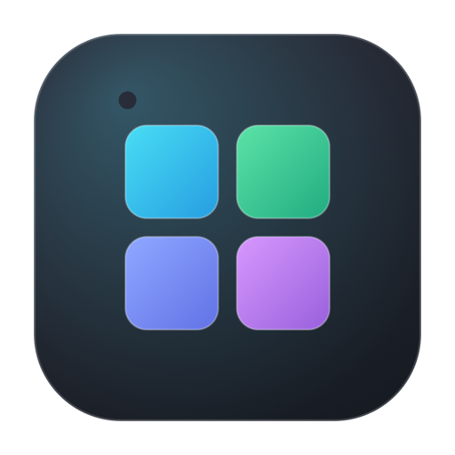
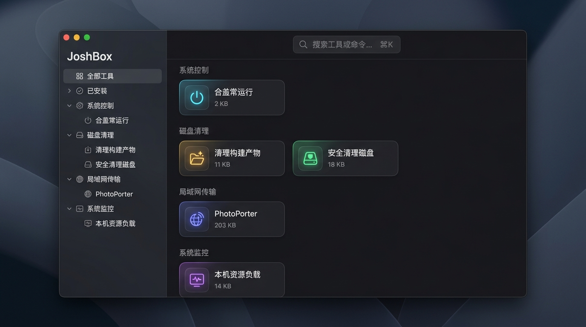

本机资源负载
原生 .app
Apple Silicon 实时 CPU/GPU/内存监控与全球网络世界地图防火墙管控。

JoshBox · macOS 14+ & Windows 10/11 · v0.2.0 · Free
装好这一个极轻启动器，JoshLabs 全系工具与软件都在里面一站式获取。
告别臃肿的全家桶与挨个找安装包的繁琐。JoshBox 主壳纯原生编写（macOS SwiftUI / Windows Rust，仅约 2 MB），内置跨设备云剪贴板与常用装机库；旗下所有桌面子应用、效率轻命令与跨端软件拆分为独立模块按需一键安装、SHA-256 校验、静默更新、不用随时卸载。

每个模块独立切包、SHA-256 强制校验，装好 JoshBox 即可在内部按需一键启用
Apple Silicon 实时 CPU/GPU/内存监控与全球网络世界地图防火墙管控。
局域网高速接收安卓与 iPhone 照片、视频与大文件，SHA-256 校验落盘。
实时检测 pmset 电源状态，一键切换 MacBook 合盖保持运行或恢复休眠。
智能回收旧缓存、build/dist/node_modules 与已合并 worktree，先预览后删除。
Mac 与 Windows 双向秒传文字/截图剪贴板；常用 AI 与办公开发软件一键批量装机。
公司、商业与个体户免费记账本：实况报表、发票工资与美加报税表导出。
实景厨房照片一键生成门型材质改造前后高清对比图，直连在线设计工作台。
外文截图整段中英对照，点任意单词查词义、听发音并连同原句存入生词本。
274 课今日美语对话、English +1 八十课体系训练与《十年之约》剧情化英语游戏。
内置桌面温和呼吸小憩倒计时器（Selah.my）与本地师傅报价对接应用（GoodPro）。